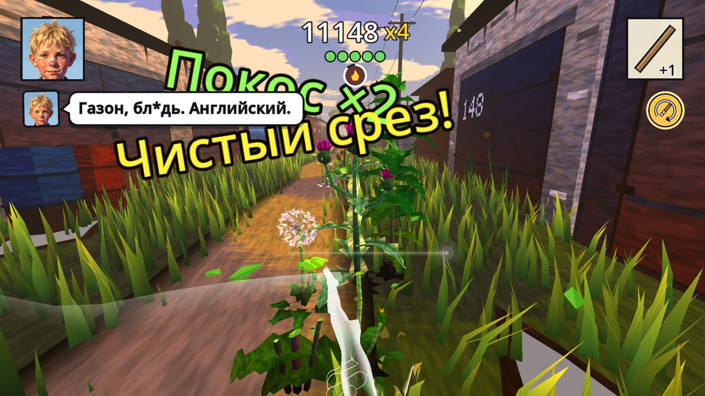
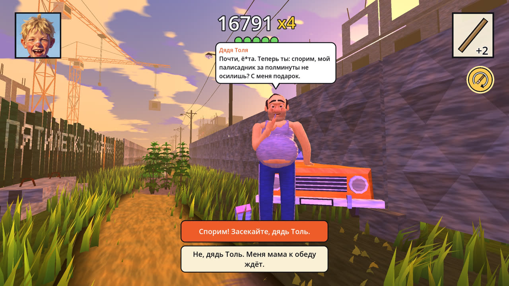
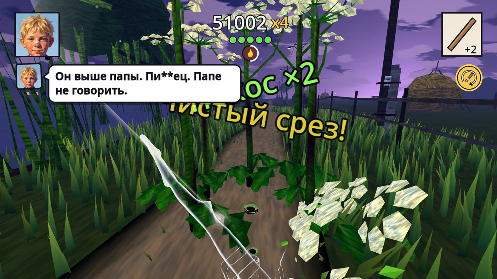

Кто рос рядом с пустырём, тот знает эту игру. Нашёл хорошую палку. Крапива выше тебя. Надо что-то делать.
В пятницу 14 ноября у нас было только это: воспоминание, название, которое при бабушке вслух не скажешь, и фраза одного из нас: «Пацан должен всю дорогу говорить, и говорить как его батя». В воскресенье ночью игра открылась на itch.io: пять дней лета 1985-го, босс, семеро соседей, больше пятисот озвученных реплик и сборка номер 56.

Рассказываем, как это получилось и почему нам кажется, что такую игру так и надо делать.
Способ: сыграл, сказал, как ощущается, получил новую сборку
Это называют вайб-кодингом. Название слабее самого дела. На самом деле мы сжали круг так, что одно дизайнерское решение стало занимать час.
У одного из нас были идея, посёлок и чувство юмора. Он на нескольких страницах записал, что это за игра. Claude писал код, лепил модели в Blender, рисовал текстуры, а голоса и музыку делал через ElevenLabs. Дальше шёл единственный шаг, который что-то решает: сборка попадала на телефон, он играл и одной фразой говорил, что не так. Эта фраза и была всем техзаданием на следующую сборку.
Фразы по порядку:
- Сборка 8: удар — «как волшебной палочкой помахал». Палка ушла за плечо и научилась замаху, удару и проводке.
- Сборка 11: «идея рабочая, пару раз посмеялся», но удар должен резать, как клинок. Теперь чертишь линию, и палка идёт по ней.
- Сборка 16: «странно, пи**ец». Справедливо.
- Сборка 17: «удар всё ещё слабый, проводки нет, руки плохие». Добавили остановку в момент удара, тряску, след и финиш над дальним плечом.
- Руки, где-то к тридцатой сборке: «страшно и отвратительно». И правда: детские локти, которые машут перед камерой, — это хоррор. Теперь во время удара видны только палка и кулаки, одним контуром.
- Сборка 33: «Неплохо».
- Сборка 47: «Очень понравилось». И тут же: «но систем в ней ещё сильно не хватает».

За два дня удар пересобрали раз шесть. В обычном графике каждая такая переделка — неделя чьей-то работы и неприятный разговор. Здесь она стоила час, поэтому старый вариант никто не защищал. В этом и есть выигрыш: дело не в том, что код быстро пишется, а в том, что его не жалко выбросить.
Три правила, чтобы не получилась каша
Когда делаешь на ощущениях, ошибка известная: навешиваешь системы на ядро, в которое неинтересно играть, и получаешь большую скучную вещь. Нас от этого удержали три правила.
- Сначала удар. Первый день в игре не было ни посёлка, ни соседей, ни очков со смыслом. Были палка и сорняк. Ничего другого не пускали, пока махать палкой не стало интересно само по себе хотя бы две минуты.
- На вердикт отвечают сборкой, а не спором. Если человек с телефоном в руке говорит, что удар слабый, — он слабый. Мы не объясняем, почему на самом деле всё хорошо.
- Что весело, решают ощущения. Что правда, решают замеры. Когда браузерная версия на компьютере стала «жёстко подвисать», мы не гадали. Встроили в игру маленький инструмент, который записывает каждый медленный кадр, и он нашёл три вещи: игра без всякой причины рисовала 240 кадров в секунду на экране 240 Гц; она замирала на 1,4, а потом на 3,5 секунды, когда впервые видела каждую новую вещь; а наше же лекарство для полного экрана (рисовать меньше пикселей) в браузере само резало частоту кадров вдвое. До последнего мы бы не догадались: идея-то была наша.

Что машина умеет, а что нет
Умеет всё, что называется работой. Семеро соседей с моделями и голосами. Четыре района посёлка. Голос пацана и пятьсот реплик к нему. Тесты, которые сами проходят игру, чтобы новая сборка тихо не сломала старый день. Сборка для Android и сборка для браузера в один вечер.
Не умеет понимать, что смешно, и чувствовать, что приятно в руке. Всё это каждый раз приходило от человека с телефоном. Реплику, которую нам цитируют чаще всего, — ребёнок не так понял отца — не предложил ни один инструмент. Рисованный вид вырос из одной картинки: он выбрал её из десятка и сказал «вот эта, лето, которое помнишь». После этого игру перекрашивали три раза, чтобы к ней приблизиться.

Почему этой игре такой способ подходит
Про игру, где бьют траву палкой, никакой документ не скажет, хороша она или нет. Она хороша, когда срез ощущается как надо, а пацан смешит, и узнать это можно только играя. Стратегии про сто лет хозяйства нужен план. Здесь нужно было сорок попыток.
Помогло и то, что игра не притворяется. Она 18+, с матом от начала до конца, про детство в советском посёлке. Мы не стали её причёсывать, чтобы влезть на большее число полок.
Чего ей ещё не хватает
За три дня получается игра, над которой смеются двадцать минут. Игра, в которую возвращаются, за три дня не получается. Вот чего, по-нашему, не хватает.
- Больше дел между ударами. Вердикт в силе: систем мало. Каких именно — мы ещё не решили. Это следующий спор на кухне, и мы хотим, чтобы вы в нём участвовали.
- Удар, опять. Он лучше, чем в восьмой сборке, но ещё не такой, чтобы махать ради самого удара. Будем менять дальше.
- Браузер на компьютере. APK для Android идёт плавно. Браузерная версия на большом экране пока медленнее, чем должна быть.
- Годы. Сейчас готов 1985-й. По плану Серёга взрослеет: 1990-й, 1995-й, 2000-й — тот же посёлок, другие палки и другие проблемы.

Так что сыграйте и напишите одну фразу о том, как оно ощущается. Так была сделана каждая сборка до сих пор, и менять это незачем. Комментарии на странице itch.io открыты, почта и форум тоже.